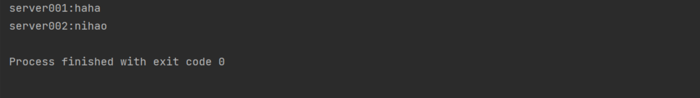

Java RMI
先前介绍过RMI但感觉不够详细所，理解也不够透彻，想着这次再学习一下，当然，此篇文章仅供个人理解，因此会借鉴大神们的文章，文末会有标出。
一、Java RMI机制与原理
RMI（Remote Method invocation）远程方法调用：是允许在一个JAVA虚拟机中运行的对象调用运行在另一个JAVA虚拟机中的对象的方法
（ps：两个虚拟机可以是运行在相同计算机的不同进程中，也可以是运行在网络上的不同计算机中）
而JAVA RMI：用于实现远程过程调用的应用程序编程接口。它使客户机上的程序可以调用远程服务器上的对象的引用
RMI过程：
服务器调用远程注册表将名称与远程对象关联
客户端在注册表中通过名称查找远程对象，然后在其上调用一个方法
要了解RMI就不得不提到两个概念
Stub和Skeleton
rmi框架使用代理来负责代理与远程对象通过socket进行通信的细节
客户端代理stub（存根）服务器代理skeleton（骨架）
RMI远程调用步骤：
1.客户调用方法
2.经过stub代理打包（编码）调用信息（变量，方法名）通过网络发给skeleton
3.服务器端通过skeleton解包，找出被调用的方法以及方法所在的对象
4.服务器端调用真正的方法，将返回结果发给skeleton
5.skeleton打包返回结果，通过网络发送给stub
6.stub解包，得到返回结果，返回给调用者
7.客户端收到返回值
二、JAVA RMI示例
创建RMI的步骤
1.创建远程接口
2.创建远程类
3.创建服务器程序
4.创建客户端程序
下面进行详细分析：
1.创建远程接口
远程接口中声明了可以被客户程序访问的远程方法，RMI规范要求远程对象所属的类实现一个远程接口
并需要满足两个条件：
(1).直接或间接继承java.rmi.Remote接口
(2).接口中所有方法声明抛出java.rmi.RemoteException
1 | public interface Iservice extends Remote |
2.创建远程类
远程类就是远程对象所属的类。RMI规范要求远程类必须实现一个远程接口，另外为了使远程的实例变成能为远程客户提供服务的远程对象，可以通过两种途径把它导出（export）为远程对象
(1).实现远程接口的同时需要继承java.rmi.server.UnicastRemoteObject,并且远程类的构造方法必须声明抛出RemoteException
第一种：
1 | public class ServiceImpl extends UnicastRemoteObject implements Iservice { |
(2).如果远程类已经继承了其他类，无法再继承UnicastRemoteObject类，那么可以在构造方法中调用UnicastRemoteObject静态方法expectObject，同时构造方法必须声明RemoteException
第二种：
1 | public class ServiceImpl2 extends Object implements Iservice { |
关于UnicastRemoteObject.expectObject(this,0)
其中this是本对象，0为监听任意端口号
3.创建服务器程序
使用注册表rmiRegistry将远程对象与名称关联,服务器的一大功能就是向rmiRegistry注册表中注册对象。
从JDK1.3版本以上，RMI命名服务被整合到JNDI中（Java Naming and Directory Interface，Java名字与目录接口）之前有讲过，后面会重新再新开一篇。
在JNDI中 javax.naming.Context声明了注册，查找，以及注销对象的方法
(1).bind(String name,Object obj)注册对象 name为url格式
(2).rebind(String name,Object obj)注册对象 如果当前name已被绑定其他对象，当前的obj将会覆盖原来的对象
(3).lookup(String name) 根据name查找对象，并返回对象
(4).unbind(String name) 解绑对象
1 | public class ServerTest { |
4.创建客户端程序
使用lookup查找远程对象
1 | public class Client { |
5.实例测试
先运行ServerTest，再运行Client客户端程序得到以下结果

以上内容相当于对大佬的文章进行再理解，重新整理成我自己能理解的样子，另外其中的代码都是按照自己的理解打的，欢迎各位指正。
可以看一下大佬的文章讲的更为细致
参考链接http://blog.csdn.net/guyuealian/article/details/51992182